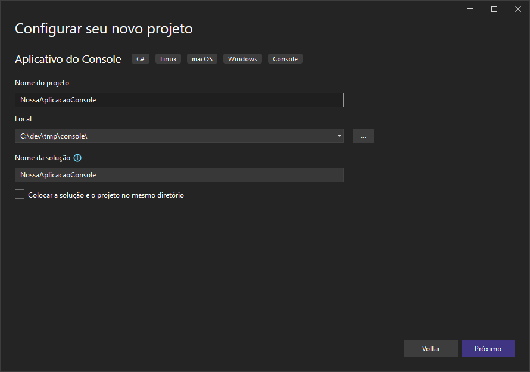
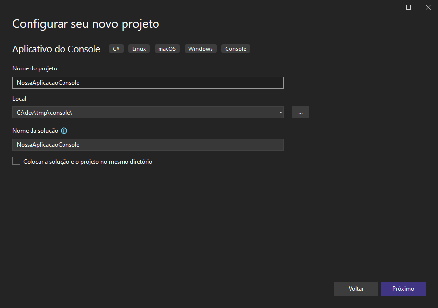

C# para Cobolistas
C# para CobolistasSolutions
As aplicações dotnet são organizadas de forma componentizada.
Uma solution contém uma coleção de projetos, junto com as informações de dependência entre estes.
Os projetos, por sua vez, estão em subpastas com seus arquivos-fonte. Uma solution pode ter um ou mais projetos, e inclusive um projeto pode ser compartilhado por mais de uma solution, mas isso não é comum no nosso contexto.
Projects
Os projetos tem duas funções principais: ser um contêiner para os arquivos-fontes e compilar estes arquivos em algum tipo de componente, definido pelo tipo do projeto. Os tipos de projeto disponíveis no nosso SDK podem ser verificados com o comando abaixo:
❯ dotnet new --list
These templates matched your input:
Template Name Short Name Language Tags
-------------------------------------------- -------------- ---------- --------------------------
ASP.NET Core Empty web [C#],F# Web/Empty
ASP.NET Core gRPC Service grpc [C#] Web/gRPC
ASP.NET Core Web API webapi [C#],F# Web/WebAPI
ASP.NET Core Web App webapp,razor [C#] Web/MVC/Razor Pages
ASP.NET Core Web App (Model-View-Controller) mvc [C#],F# Web/MVC
ASP.NET Core with Angular angular [C#] Web/MVC/SPA
ASP.NET Core with React.js react [C#] Web/MVC/SPA
Blazor Server App blazorserver [C#] Web/Blazor
Blazor WebAssembly App blazorwasm [C#] Web/Blazor/WebAssembly/PWA
Class Library classlib [C#],F#,VB Common/Library
Console App console [C#],F#,VB Common/Console
dotnet gitignore file gitignore Config
Dotnet local tool manifest file tool-manifest Config
EditorConfig file editorconfig Config
global.json file globaljson Config
MSTest Test Project mstest [C#],F#,VB Test/MSTest
MVC ViewImports viewimports [C#] Web/ASP.NET
MVC ViewStart viewstart [C#] Web/ASP.NET
NuGet Config nugetconfig Config
NUnit 3 Test Item nunit-test [C#],F#,VB Test/NUnit
NUnit 3 Test Project nunit [C#],F#,VB Test/NUnit
Protocol Buffer File proto Web/gRPC
Razor Class Library razorclasslib [C#] Web/Razor/Library
Razor Component razorcomponent [C#] Web/ASP.NET
Razor Page page [C#] Web/ASP.NET
Solution File sln,solution Solution
Web Config webconfig Config
Worker Service worker [C#],F# Common/Worker/Web
xUnit Test Project xunit [C#],F#,VB Test/xUnit
Criando nossa primeira solution
Observando os templates disponíveis na lista anterior, Solution File usa as chaves sln e solution. Dessa maneira, vamos usar o terminal para criar nossa solution.
❯ dotnet new sln -n NossaPrimeiraSolution
The template "Solution File" was created successfully.
❯ dotnet new console --name "ConsoleApp"
The template "Console App" was created successfully.
Processing post-creation actions...
Running 'dotnet restore' on /mnt/c/dev/tmp/dotnet/ConsoleApp/ConsoleApp.csproj...
Determining projects to restore...
Restored /mnt/c/dev/tmp/dotnet/ConsoleApp/ConsoleApp.csproj (in 119 ms).
Restore succeeded.
❯ tree
.
├── ConsoleApp
│   ├── ConsoleApp.csproj
│   └── Program.cs
└── NossaPrimeiraSolution.sln
1 directory, 3 files
Utilizando o Visual Studio, basta criar um projeto que a solution vai ser criada ao mesmo tempo.

 


Testando o nosso primeiro app de console:
console/NossaAplicacaoConsole/NossaAplicacaoConsole via .NET v6.0.403 üéØ net6.0
❯ dotnet run .
Olá, mundo AmbevTech!